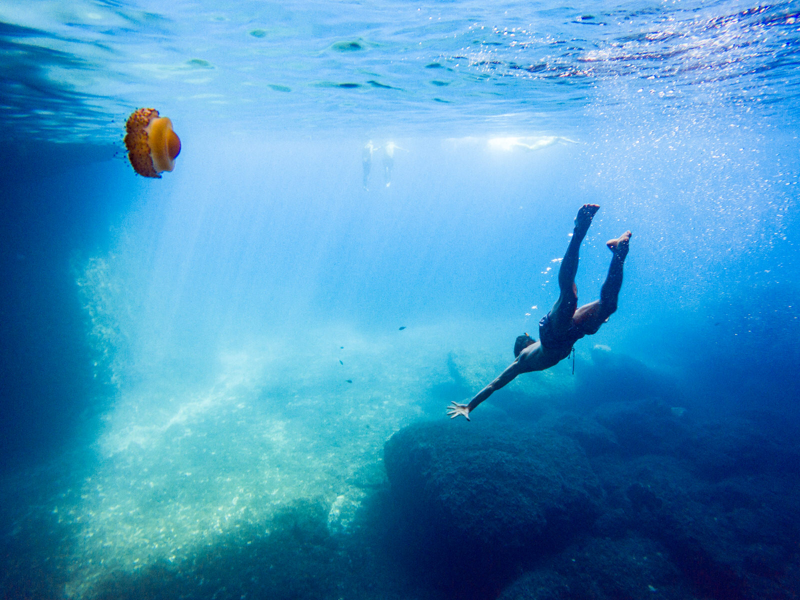
Il Mediterraneo non ha nulla da invidiare alle mete tropicali per le spiagge ampie e bianche, per le calette nascoste e per i colori dell’acqua; il suo punto a favore? Questo mare da sogno è a due passi da casa.
Scegliere la propria vacanza è come prendere una decisione per la propria vita: ogni terra ha le sue tradizioni e caratteristiche. Noi amiamo il Mediterraneo perché è piccolo ma tanto vario, non ci si annoia mai a nuotare tra le sue acque, a navigare tra le onde o a esplorare l’entroterra.
Il Mar Mediterraneo, per le sue caratteristiche geografiche, climatiche e morfologiche è una delle zone con più biodiversità al mondo. Si, il nostro “piccolo” mare ospita circa il 20% della biodiversità mondiale ed è uno dei più importanti ecosistemi al mondo.
Il panorama è così vario e unico tra coste vulcaniche, calcaree e granitiche che gli occhi non si stancano mai di viaggiare.
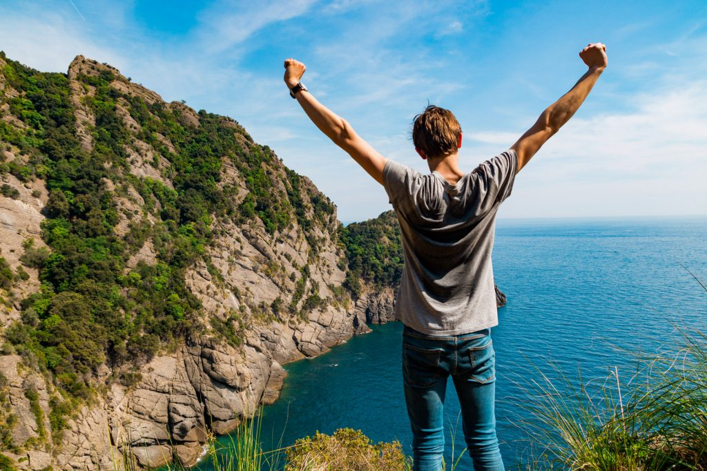
Oltre alle bellezze emerse storiche, naturali e tradizionali il Mediterraneo offre uno spettacolo sommerso unico per le sue caratteristiche geologiche e per gli organismi che lo abitano: tra i 15m e i 30m di profondità la vita marina è frizzante, colorata e molto attiva.
Per chi non vuole mettere la testa sott’acqua ma ama il mare e il suo sogno più grande è avvistare delfini e balene, il Mediterraneo ha la fortuna di essere la casa della Balenottera comune (Balenottera physalus), il secondo cetaceo più grande al mondo.
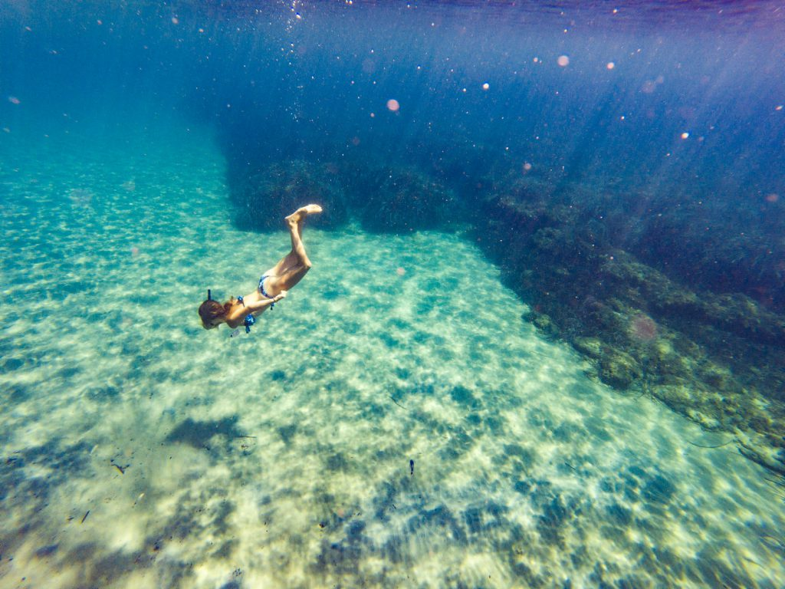
Il Mediterraneo è il luogo perfetto per una crociera in barca a vela tra le isolette greche, italiane o spagnole, oppure per la circumnavigazione della Sardegna, della Sicilia o della Corsica.
Qualche esempio? Navigare alle Eolie è una delle esperienze più belle che possiate mai fare nella vostra vita.
1. Isole Sporadi – Grecia
L’arcipelago delle Sporadi comprende le isole di Alonissos, Skiathos e Skopelos, le più verdi della Grecia e con un mare da sogno; sono la casa della foca monaca (Monachus monachus).
Sono un tour perfetto per un viaggio di 15 giorni tra gli uliveti della tradizionale e poco turistica Alonissos, le calette e le falesie della romantica Skopelos e la vita notturna della tenace isola di Skiathos.
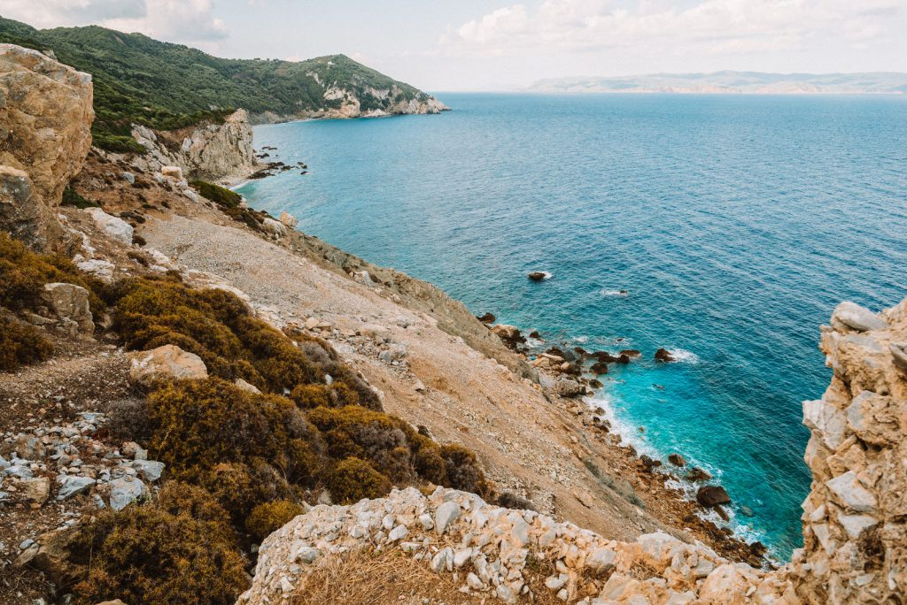
Le isole di Alonissos e Skopelos non sono molto affollate, per questo sono perfette per una vacanza rilassante anche nei mesi di luglio e agosto. Skiathos invece è la più giovane delle tre e l’unica dotata di aeroporto; è ricca di locali perfetti per fare serata in spiaggia fino al mattino, per questo motivo nei mesi di luglio e agosto è molto affollata, ma ricca di divertimenti. Scopri i posti più belli dell’isola di Skiathos sul nostro sito 😉
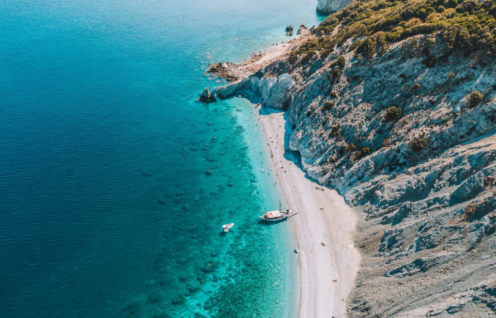
2. Gallura – Italia
Spiagge bianche, acqua azzurra, vita notturna e buon cibo. Cosa si può sognare di più per una vacanza estiva? La Gallura è la zona Nord-Est della Sardegna, raggiungibile in aereo o in traghetto sbarcando a Olbia.
Se si vuole fare un viaggio itinerante, con mete diverse ogni giorno il punto di partenza ideale è la zona di Golfo Aranci. Questa piccola cittadina nella punta più est della Sardegna vanta di un panorama mozzafiato con vista sull’isola di Tavolara, ha una colonia di tursiopi – delfini – che vive nelle acque del golfo antistante ed è a metà strada tra i punti più belli da vedere.
Da Golfo Aranci spostandovi verso sud non potete perdere una visita all’Isola di Tavolara (se siete subacquei “La Secca del Papa” è una delle immersioni più belle del nostro mare), Cala Brandinchi e Spiaggia La Cinta.
Verso nord invece dovete fare una sosta in tutte le spiagge della Costa Smeralda: Spiaggia del Principe, Liscia Ruja, Romazzino, il Golfo del Pevero.
Almeno una giornata la si deve dedicare all’isola di Caprera e alle altre isole dell’Arcipelago della Maddalena.
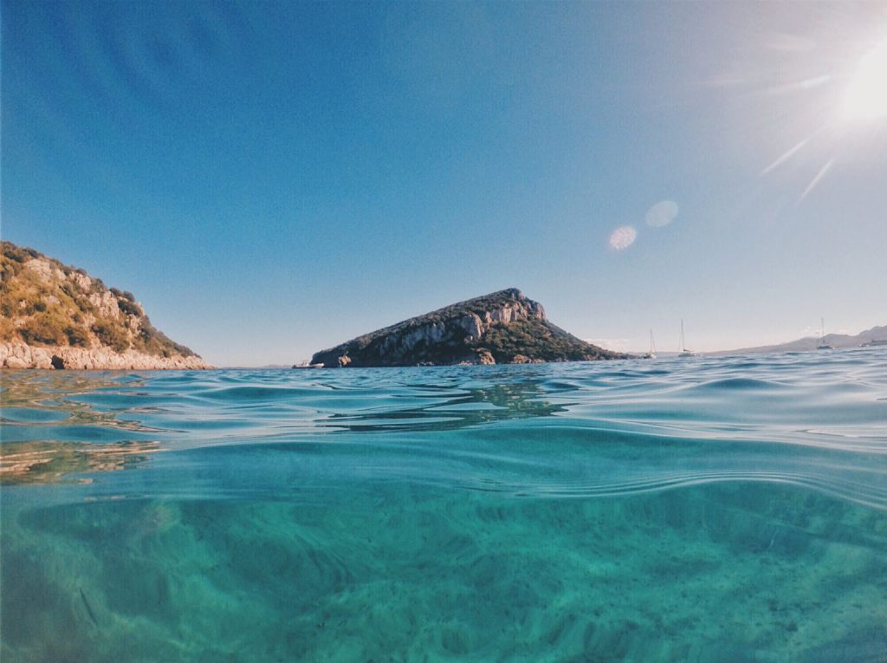
3. Cicladi – Grecia
Quando si pensa alla Grecia si immaginano le casette bianche, i mulini a vento, i resti archeologici e i tramonti mozzafiato. Le Cicladi racchiudono tutto questo in tantissime isolette semi-desertiche .
Mykonos, Paros, Antiparos, Nasso, Andros, Santorini, Ios, Milos sono solo alcune di queste incredibili isolette; tra le quali Santorini è la più famosa e la meta più ambita per il panorama che offre.
4. Alghero e dintorni – Italia
La Sardegna non finirà mai di stupire, è un’isola dalle mille risorse e con una natura unica.
Il Nord Ovest della Sardegna conserva ancora le bellezze naturali di questa terra: l’isola dell’Asinara è Area Marina Protetta e sito di riproduzione delle tartarughe marine (Caretta caretta); Capo Caccia è famoso per le sue falesie a strapiombo sul mare, per le grotte e per il corallo rosso; la spiaggia La Pelosa famosa in tutto il mondo per la sua sabbia bianca e per il fondale basso; infine Alghero che è una delle città più affascinanti dell’isola.
5. Isole Egadi, Trapani e dintorni – Italia
La punta a Nord Ovest della Sicilia è una zona selvaggia, dove la tradizione della pesca fa ancora parte della vita locale.
Un viaggio on the road di 15 giorni vi porterà alla scoperta delle bellezze di questa terra dai sapori forti e dal mare unico.
Le Isole di Favignana, Marittimo e Levanzo sono raggiungibili con un aliscafo dal porto di Trapani e sono una delle mete più belle per le immersioni nel Mediterraneo.
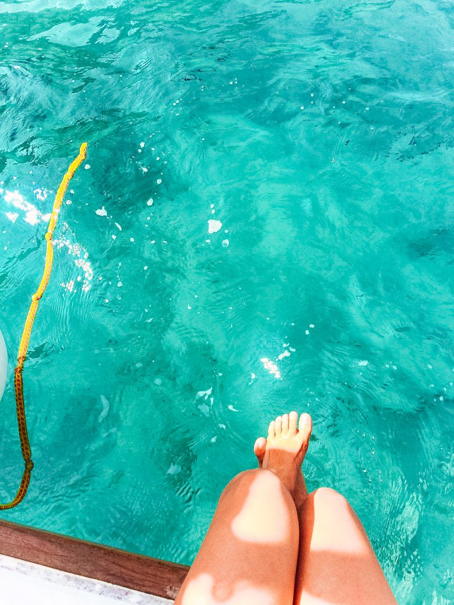
Chi vuole restare con i piedi a terra ma non può perdersi la bellezza dei faraglioni di Scopello e della Riserva dello Zingaro.
Se vuoi andare oltre la natura può addentrarti nell’entroterra alla ricerca dei resti della Magna Grecia: i templi di Selinunte e Segesta sono a due passi.
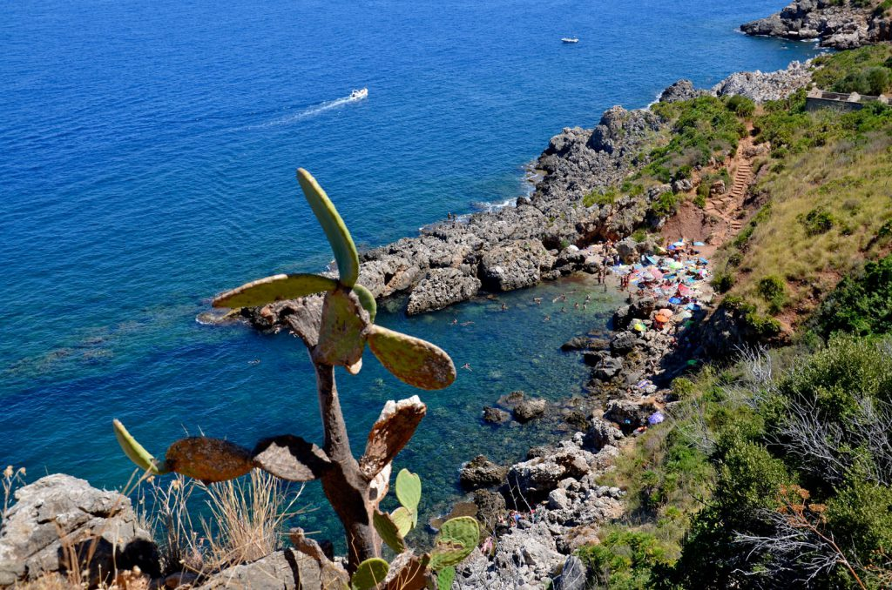
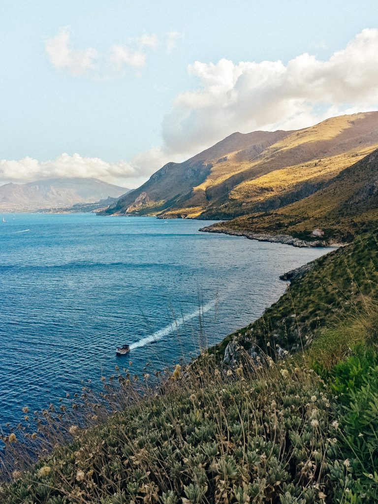
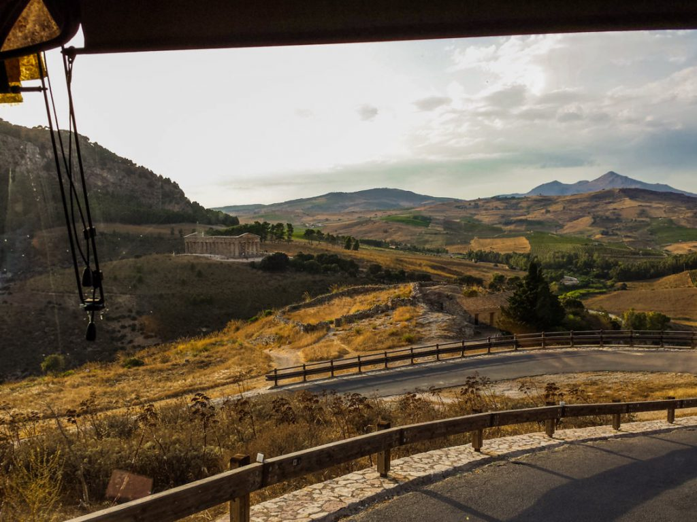
6. Zante – Grecia
La Grecia è a due passi da casa, è economica e soprattuto ha un mare da sogno. L’isola di Zante è nella mia lista di viaggi da un po’, la sua spiaggia è una delle più belle di tutto il Mediterraneo, in più è la casa delle tartarughe Caretta caretta, facili da avvistare nella zona.
Per conoscere Zante con gli occhi di chi ci vive leggi cosa ci ha raccontato Ilaria di quest’incredibile isola dell’Adriatico.
7. Oristano e Ogliastra – Italia
Se il Nord della Sardegna è ritenuta la parte più bella ma più turistica, le coste centrali non hanno nulla da invidiare. Sono selvagge e poco affollate, perfette per un po’ di relax.
La costa ovest della Sardegna, nella Penisola del Sinis, è l’unica zona ad aver conservato le dune sabbiose ed è sensazionale ed è a due passi da una spiaggia con la sabbia di quarzo, Is Arutas.
La costa est invece è ricca di calette e grotte nascoste, casa della foca monaca (Monachus monachus), hanno l’acqua del mare da sogno e sono raggiungibili in barca o attraverso brevi sentieri. Non potete perdervi Cala Luna, Su Sirboni, Cala Goloritzè, Cala Mariolu, Spiaggia dei Gabbiani, Coccorrocci e Melisenda.
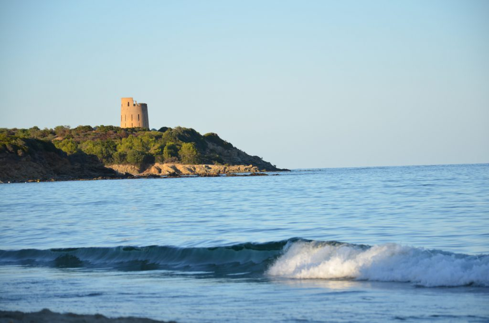
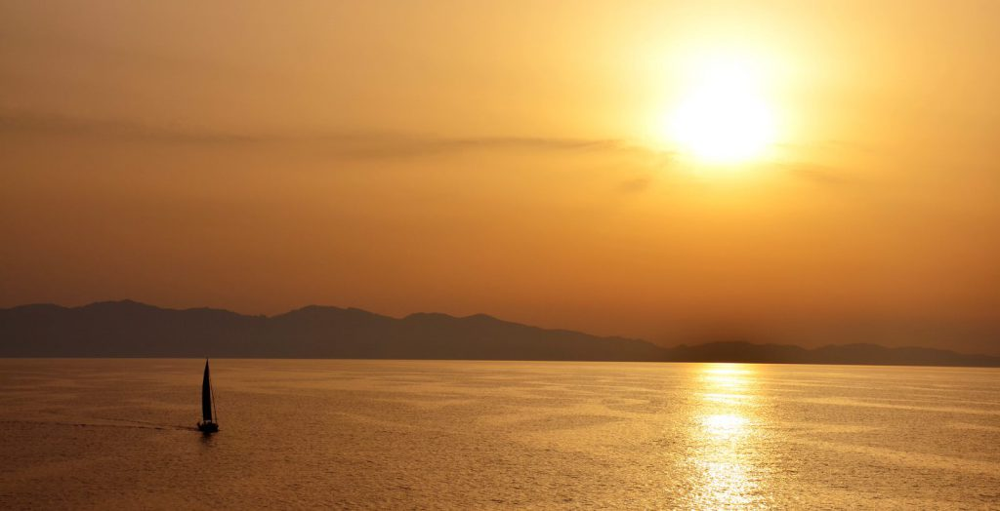
8. Isola di Krk – Croazia
La Croazia è una meta sempre più ambita, soprattutto dalle famiglie e da chi vuole rilassarsi facendo uscite in barca, prendendo il sole o esplorando l’incantevole entroterra ricco di foreste e cascate. Un esempio? Il Parco Nazionale dei laghi di Plitvice merita la sosta per un weekend.
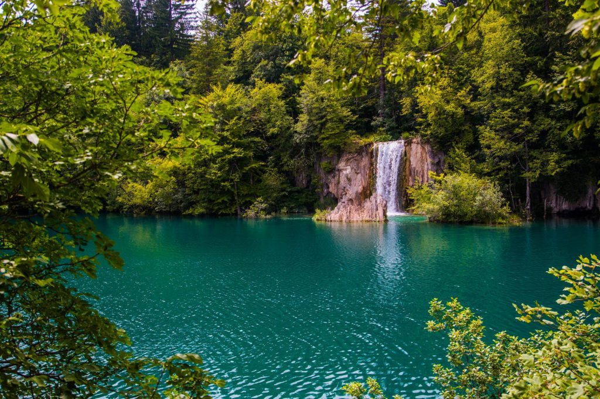
L’isola di Krk è tra le più grandi della Croazia e si raggiunge in macchina passando attraverso un ponte a pagamento (circa 30 kune per l’auto). La città principale è Veglia, un delizioso paesino sul lungo mare ricco di ristoranti dove mangiare ottimo pesce a buon prezzo.
Le spiagge più belle si trovano nella zona più a sud dell’isola, nella zona di Stara Baska, potete percorrere a piedi “la mulattiera”, un piccolo sentiero che vi farà scoprire delle calette uniche con un mare da sogno.
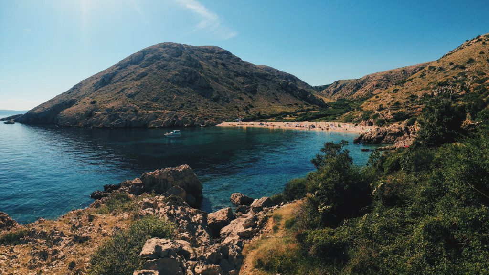
9. Isole Eolie – Italia
Se penso al Mediterraneo immagino un tour in barca a vela tra le isole, i vulcani, le immersioni tra Posidonia oceanica, cernie, polpi, aragoste, cicale di mare e l’avvistamento delle stenelle che nuotano attorno alla barca. Le Eolie sono uniche perché descrivono tutto questo e molto altro.
Sono un mondo a se stante a contatto con il mare, con al tradizione e con il potere della natura.
10. Puglia – Italia
Oh Puglia! La Puglia è la Puglia, non si può dire nulla. La gente, i sapori, le tradizioni, il mare, le spiagge, i trulli e i piccoli paesini. La Puglia è tutta una meraviglia.
Le Isole Tremiti valgono un’escursione in barca e almeno un bagno o un’immersione.
Se volete fare un viaggio on-the-road non potete perdere Polignano a Mare, Giovinazzo, Alberobello, Grottaglie, il Parco Nazionale del Gargano, Torre dell’Orso, Castro, Leuca e Porto Selvaggio.
11. Malta
Diventata famosa per il grande arco bianco sul mare, che purtroppo oggi non c’è più, Malta è un’isola incantevole per e vacanze estive.
Le spiagge sono fantastiche e le città principali sono ricche di locali per la vita notturna.
12. Ponza, Capri e Ischia – Italia
Le vacanze italiane che da sempre fanno parte dell’immaginario cinematografico, con il mare azzurro, i bagni, le scogliere a picco sul mare e il clima amichevole nei centri cittadini.
Ponza ha una delle spiagge più belle d’Italia, una scogliera bianca e ripida che si tuffa nell’acqua trasparente del Mar Tirreno.
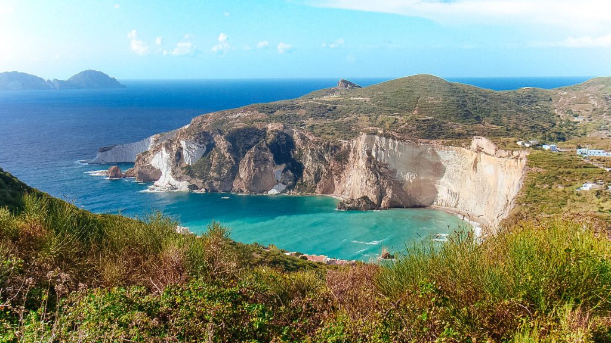
Ischia risente del vicino vulcano, il Vesuvio, con spiagge bianche e acque sulfuree, non potete perdere la visita al castello aragonese.
Capri e la sua meravigliosa grotta azzurra, i faraglioni, le calette, le casette bianche che ricordano la Grecia e le maestose ville dei personaggi famosi che sono passati per Capri e si sono innamorati. Di sicuro non è un’isola economica, ma una visita è d’obbligo.
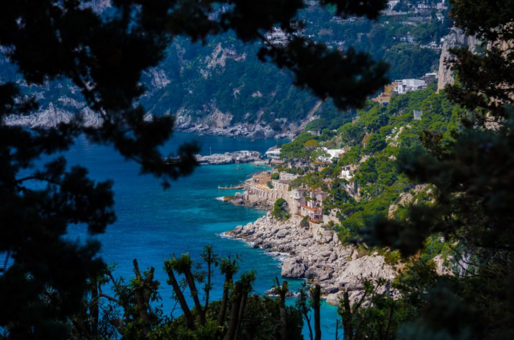
13. Creta – Grecia
Creta vanta spiagge dalla sabbia rosa, lagune, calette, storia e leggende.
Il Castello di Knossos è una meta imperdibile per la sua storia, la leggenda del Filo di Arianna e il Minotauro è ambientata proprio qui.
Per rilassarsi la spiaggia di Elafonissi con la sabbia rosa vanta un panorama unico al mondo.
14. Bonifacio e Lavezzi – Francia
Quello stretto canale che separa la Corsica dalla Sardegna, la Francia dall’Italia è uno dei luoghi più spettacolari.
L’acqua è così cristallina che sembra di sognare e le scogliere rispecchiano la storia di questa terra.
L’isola di Lavezzi è una delle isole più incantevoli della zona e dista poche miglia nautiche dall’Arcipelago della Maddalena.
15. Bergeggi, Portofino e Cinque Terre – Italia
La Liguria sa affascinare sia se vista dal mare sia passeggiando tra le strette vie dei borghi colorati affissati sul Mar Ligure. La sua costa è molto urbanizzata, ma sono presenti meravigliose oasi di pace, le Aree Marine Protette di Bergeggi, Portofino e delle Cinque Terre.
In aggiunta la Liguria è la regione italiana con più spiagge premiate con la bandiera blu, noi non vediamo l’ora di avventurarci ancora di più rispetto a quello che abbiamo potuto apprezzare fino ad ora.
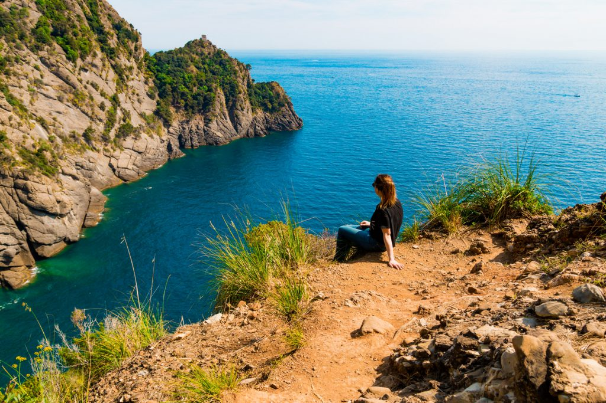
Non puoi visitare la Liguria senza fermarti a fare whale-watching all’interno del Pelagos, conosciuto come Santuario dei Cetacei; delfini comuni, tursiopi, stenelle, zifi, globicefali, balenottere comuni e capodogli fanno capolino tra le onde del Mar Ligure.
Un giro in barca a vela all’isola di Bergeggi o alle Cinque Terre è rigenerante e ti fa entrare in contatto con la natura del luogo.
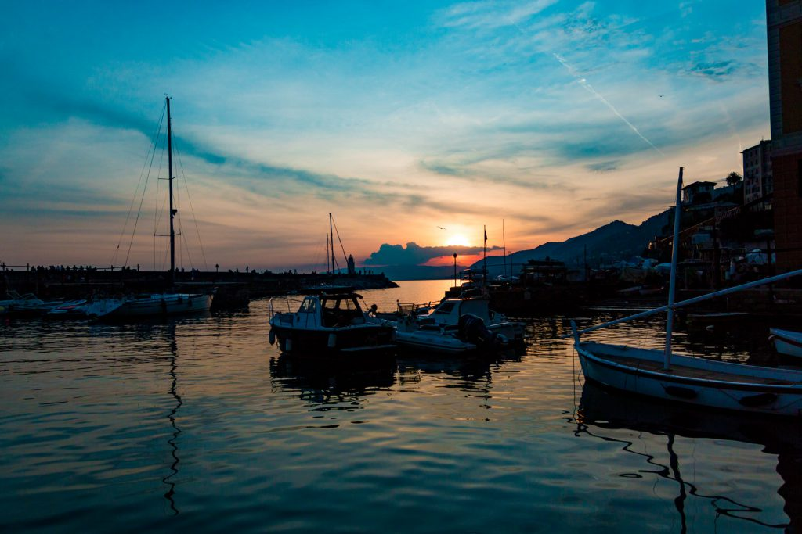
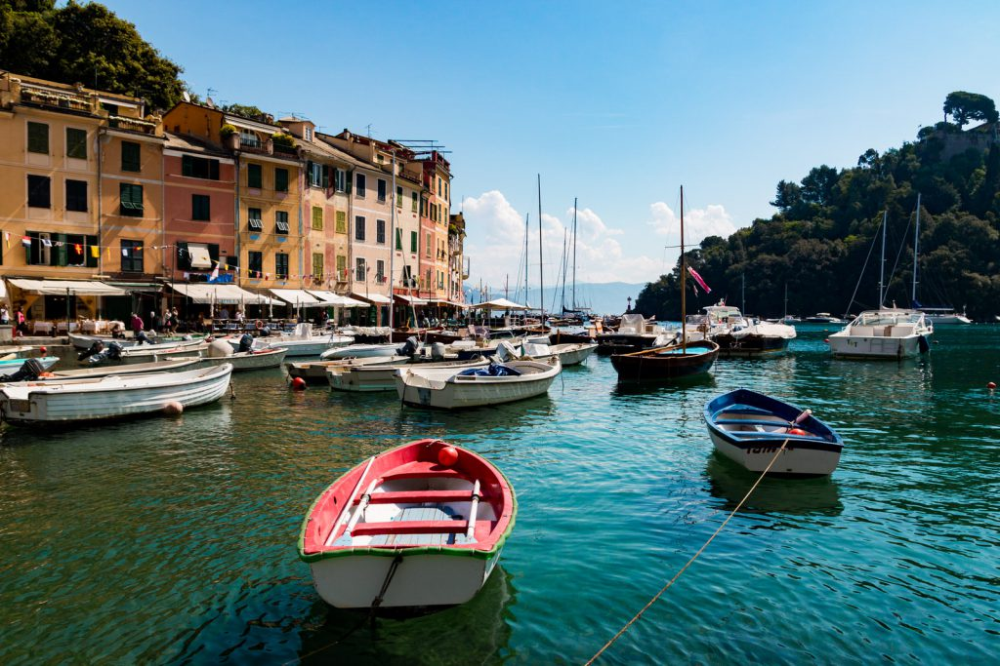
Quali sono le vostre mete preferite del Mediterraneo? Fatecelo sapere commentando qui sotto 😉


![“A Lanzarote”. Un’isola, uno stile di vita, uno spazio in cui umanità e natura hanno imparato a convivere, fino ad oggi. “A Lanzarote” è una lode all’equilibrio che punta a far riflettere sul ruolo della natura per la nostra esistenza e di come, in un futuro sempre più imprevedibile, ci sia la necessità di ritrovare una relazione con le meraviglie naturali che ci circondano. “A Lanzarote” vuole essere un’inizio di un percorso che vede la combinazione di natura, design e artigianato locale per promuovere una mentalità di viaggio e vita sostenibili. Questo è Kiwi sotto un’altra veste, la nostra.🌊 Short Film ambientato a Lanzarote (Canarie, Spagna) è stato realizzato da @federico.girotto e @valentinalovat durante il periodo di quarantena, aprile 2020, utilizzando materiali registrati in passato.
Short film completo su IGTV🎞
#Lanzarote](../wp-content/plugins/instagram-feed/img/placeholder.png)